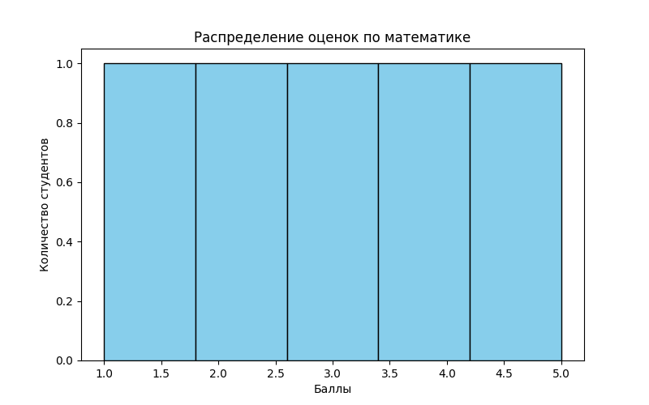
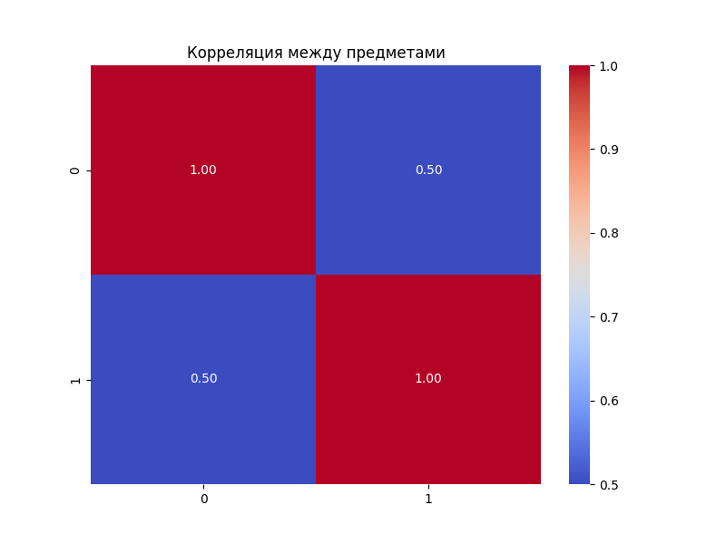
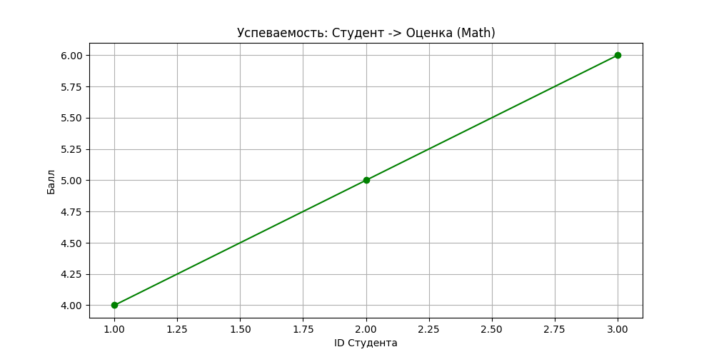
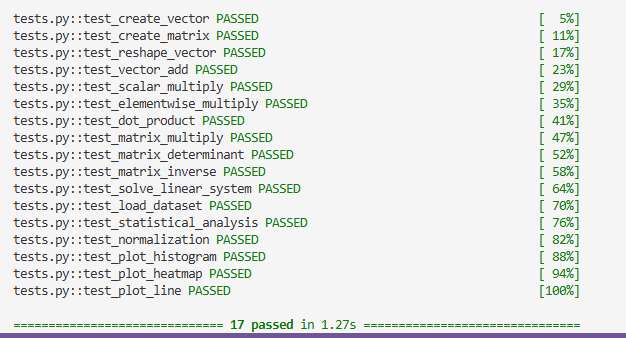

Лабораторная работа №2
Overview
- Дата: 06.03.2026
- Тема: Основы NumPy: массивы и векторные операции
- Статус: [Completed]
Objective
Целью работы являлось освоение библиотеки NumPy для эффективной обработки числовых данных. Основные задачи:
-
Работа с многомерными массивами (создание, изменение формы, транспонирование).
-
Реализация алгоритмов линейной алгебры (умножение матриц, инверсия, решение систем уравнений).
-
Автоматизация статистического анализа и нормализация данных.
-
Визуализация результатов (гистограммы, тепловые карты корреляции).
Implementation
Задача решена с применением стандартов DAST/DATS:
-
Тесты: Реализовано 17 юнит-тестов (
pytest), проверяющих корректность математических операций. -
Аннотации: Весь код аннотирован согласно PEP 484
-
Спецификация: Соблюден стандарт PEP 8 (оформление кода, отступы, импорты).
Технические нюансы:
-
Векторизация: Вместо циклов
forиспользованы векторные операции NumPy, что на порядки ускоряет вычисления. -
Стабильность: В функцию нормализации добавлена проверка на деление на ноль (в случае, если все оценки в выборке одинаковы).
Conclusion
- Реализована библиотека необходимых функций для работы с данными.
- Все 17 тестов пройдены успешно (
100% PASSED). - Сгенерированы и сохранены визуализации распределения успеваемости и корреляционных связей между предметами в папку
plots/.
Visualisation
В ходе работы были сгенерированы графики, отражающие распределение данных и зависимости между ними. Все графики сохранены в директорию проекта.
Гистограмма распределения оценок: Показывает частоту встречаемости определенных баллов в учебной группе.

Тепловая карта корреляции: Визуализирует взаимосвязь между оценками по разным предметам.

Линейный график успеваемости: Отображает динамику оценок в зависимости от номера студента в списке.

Результаты тестирования: Скриншот успешного прохождения всех 17 юнит-тестов.

Run the project
- Активируйте окружение:
source numpy_env/bin/activate(илиScripts\activateна Windows) - Запустите тесты:
python -m pytest tests.py -v - Сгенерируйте отчет:
python main.py